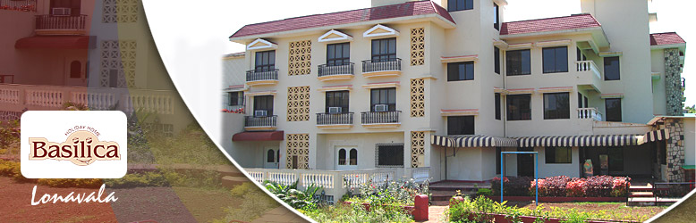
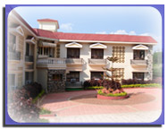

|  | |||||||
|
|||||||
“Basilica Holiday Home” is constituted to provide exclusive hospitality services to the members and their family & friends, and it's featured privileged services. This club is first of a kind in the vicinity of Lonavala and Panchgani, which provides Luxurious Accommodation to it's members within aesthetically constructed and furnished infrastructure grandeur embedded with elite class interiors and ultra modern facilities. The indoor facilities provided are; Unit Air conditioners, Hi-tech security systems, Home Theater Communication net work, elegantly designed furniture, indoor & outdoor games, health club & gymnasium, children park, library, swimming pool, land scrapings, garden area full of greenery and mountain view, local transport. All the facilities are provided for the comfort and luxury of members and their family. This infrastructure and the facilities provided are for comfortable stay during weekends and holidays; the corporate and business houses along with luxurious living arrangements can conduct even the conferences and conventions for corporate executives. Basilica has introduced exciting and fabulous holiday packages for the benefit of individual and business executives to derive maximum customer satisfaction for different style of living while availing quality & unique services. |
|||||||